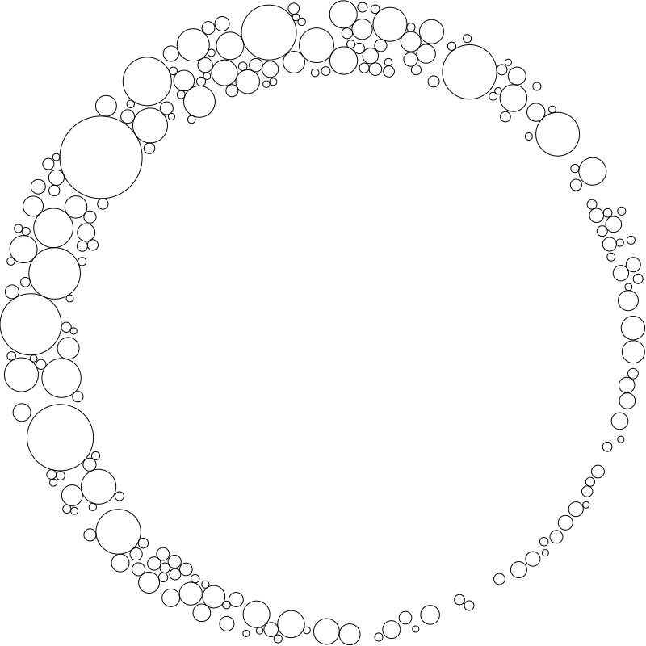

RenderScripts
RenderScripts are regular Python scripts, except that:
- Rather than just having the extension
.py, they have an extension like.qmd.py - They contain a module docstring containing frontmatter (i.e three hyphens on a line, then some yaml, then another three hyphens on a line).
These scripts are run when your site is rendered. Anything that they print to stdout becomes a new file in your site. The name of the file is the same as the name of the .py script, but without the .py extension. For instance, the page you’re reading right now page is created by a script called renderscript.qmd.py, which you’ll find here.
Hot/live reloading even works with these .py scripts – so as soon as you save the script, you’ll see the new output in your web browser.
This approach can be particularly helpful for generating data-driven documents. For instance, consider this table, containing a list of the people with testimonials on nbdev’s home page:
| Name | Position | |
|---|---|---|
| Chris Lattner | Inventor of Swift and LLVM | |
 |
Fernando Pérez | Creator of Jupyter |
| David Berg | Software Engineer, Netflix | |
| Erik Gaasedelen | Software Engineer, Lyft | |
 |
Roxanna Pourzand | Product Manager, Transform |
| Hugo Bowne-Anderson | Head of Developer Relations, Outerbounds |
When creating a table like this, it can be tricky to ensure that markdown is correct and consistent for every row. It can be easier and more maintainable to programatically generate it. The table above is generated from the following python list:
testimonials = [
('chris-lattner.png', 'Chris Lattner', 'Inventor of Swift and LLVM'),
('fernando-pérez.jpeg', 'Fernando Pérez', 'Creator of Jupyter'),
('david-berg.jpeg', 'David Berg', 'Software Engineer, Netflix'),
('erik-gaasedelen.jpeg', 'Erik Gaasedelen', 'Software Engineer, Lyft'),
('roxanna-pourzand.jpeg', 'Roxanna Pourzand', 'Product Manager, Transform'),
('hugo-bowne-anderson.jpeg', 'Hugo Bowne-Anderson', 'Head of Developer Relations, Outerbounds')
]To produce the table from this python list, the following four lines of code are used:
print(qmd.tbl_row(['','Name','Position']))
print(qmd.tbl_sep([1,3,4]))
for fname,name,position in testimonials:
print(qmd.tbl_row([im(fname, 60), name, position]))tbl_hdr and tbl_row are two functions imported from the module nbdev.qmd. nbdev.qmd is a small module that has some convenient functions for creating .qmd documents, such as the table creation functions used above. You can see more examples of their use in index.qmd.py, which is the RenderScript which creates the nbdev home page. The nbdev home page is a more idiomatic example of how to use RenderScripts than the current page’s source code – we’re only using RenderScript for the current page to provide a more simple example. In practice, we find that RenderScripts are best used for pages containing a lot of data-driven content, reusable components, and so forth.
You can use RenderScripts to create any kind of file. For instance, the SVG below is created dynamically using this script:
{kind=link}

Once you’ve run nbdev_preview or nbdev_docs you’ll find your rendered document in the _proc directory, along with all of your processed notebooks. This can be helpful for debugging. You can also simply call your script directly from the shell (e.g. python renderscript.qmd.py) to view the printed output.